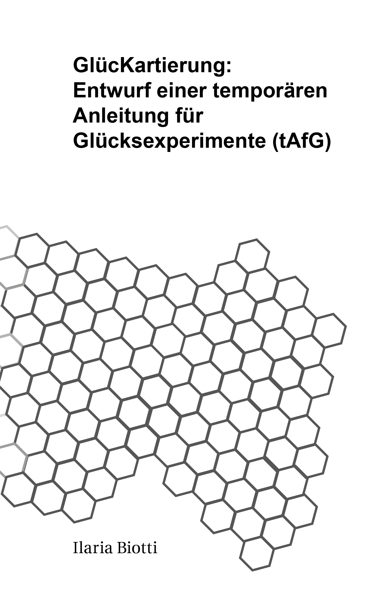

Das Institut für Glücksexperimente
GlücKartierung: Entwurf einer temporären Anleitung für Glücksexperimente (tAfG)
Masterarbeit Publication, 184 pages, 2014
This work develops an understanding of the concept of happiness as a space for artistic experiments in which happiness is freed from the exclusive reference to people. My experiments apply happiness to the nonhuman, that might include landscape as well as organic and inorganic objects. Happiness as a quality is thus also extended to material space.
SmileyMap
Collaborative Research Project, App Demo, 20 9x12cm C-Prints on Pearl paper of places mapped during the testing of the demo. 2012 - 2015
SmileyMap is a Geo-mobile Application Demo that maps affectivity in Berlin. It encompasses a range of nine feelings, spanning from unhappiness to happiness, offering a real time overview of the affective status of the city to its users and contributors. Smiley Maps was developed in collaboration with the Quality and Usability Department of the Telecom Labs in Berlin, with the support of the Hybrid Plattform Berlin at the Universität der Kunste, during my studies at The Institut for Art in Context.